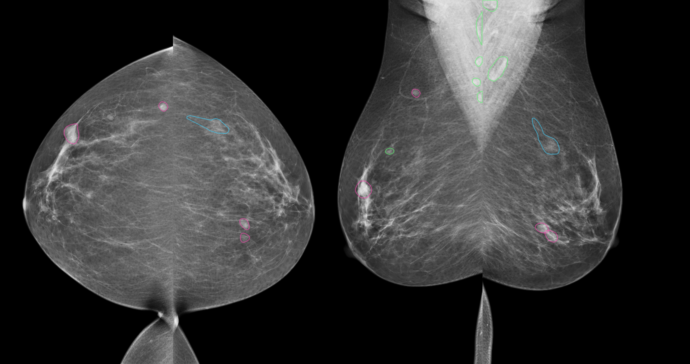
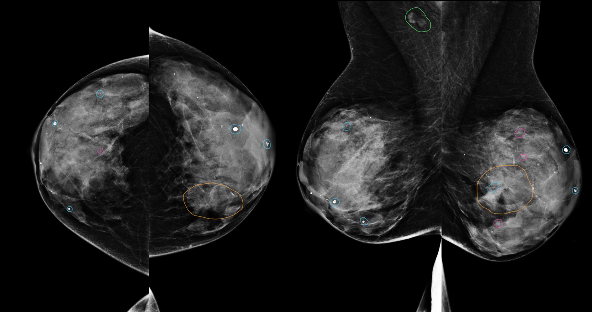
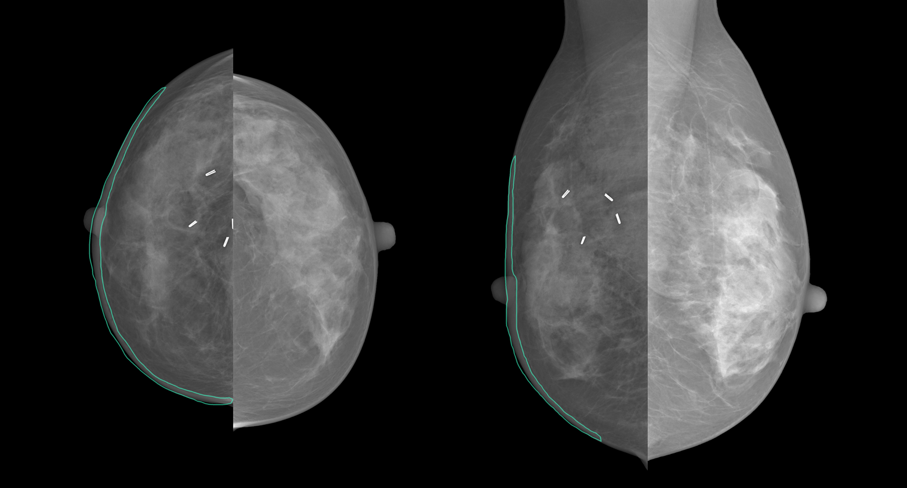
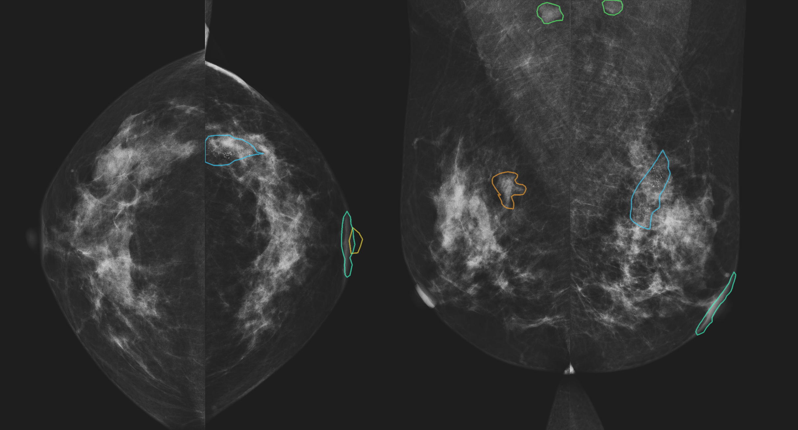

MammoAtlas
Abstract
733 patients · 2932 mammograms · 8 findigs · X lesion annotations · DICOM SEG
Mammography dataset with pixel-level annotations for 8 segmentation categories, breast-level ACR density and BI-RADS assessment, distributed with original DICOM images and DICOM SEG annotations.

NLBS_1.2.124.113532.10.77.16.11.20090723.131928.13494096

CSAW-CC_1.2.826.0.1.3680043.8.498.13362221286484217654615033329863402144

INbreast_1.2.826.0.1.3680043.8.498.29713840010218141690658381592169073407

CMMD_1.3.6.1.4.1.14519.5.2.1.1239.1759.598888059044635576254843278173
Data sources
Open licence sources with the corresponding full dicom mammography studies.
Dataset distribution
By quantity
By unique finding
BI-RADS
ACR
DICOM Viewer
Interactive preview of original mammograms with their corresponding DICOM SEG annotation overlays.
DICOM SEG findings
Select which findings are visible
Add more pairs in the DICOM_SAMPLES array at the bottom of this page.
Each item contains one mammogram DICOM and its corresponding DICOM SEG.
The legend maps SegmentNumber to the MammoAtlas category id.
Colors are read from the DICOM SEG metadata, and each finding can be
independently shown or hidden.
Annotation JSON sample
Poster
BibTeX
@article{YourPaperKey2024,
title={Your Paper Title Here},
author={First Author and Second Author and Third Author},
journal={Conference/Journal Name},
year={2024},
url={https://your-domain.com/your-project-page}
}